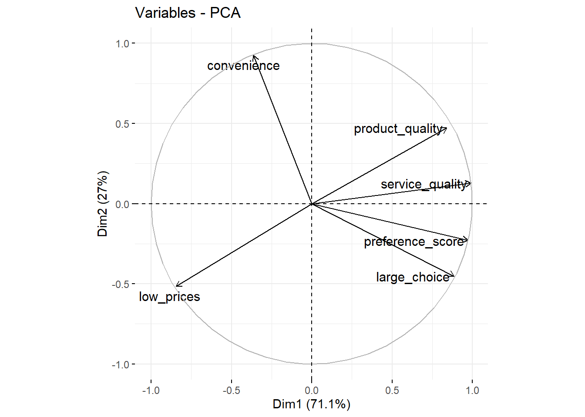
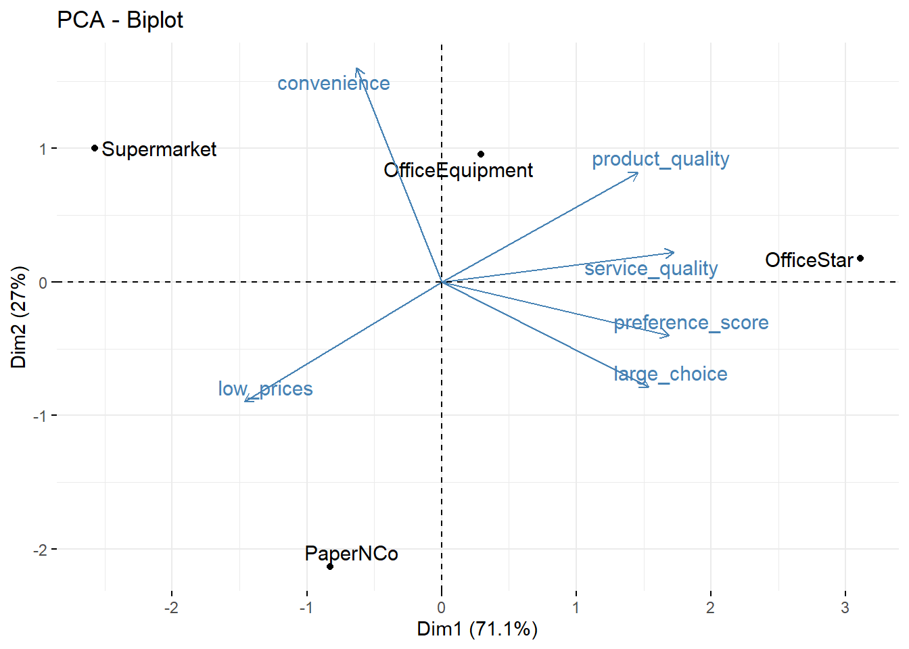

Análise de componentes principais para mapas perceptivos (office dataset)
Neste capítulo, você aprenderá como realizar uma análise de componentes principais e visualizar os resultados em um mapa perceptivo.
Digamos que tenhamos um conjunto de observações que diferem entre si em várias dimensões; por exemplo, temos várias marcas de uísque (observações) classificadas em vários atributos, como corpo, doçura, sabor, etc. (dimensões). Se algumas dessas dimensões estiverem fortemente correlacionadas, deve ser possível descrever as observações por um número menor (que o original) de dimensões sem perder muita informação. Por exemplo, doçura e frutificação podem ser altamente correlacionadas e, portanto, podem ser substituídas por uma variável. Essa redução de dimensionalidade é o objetivo da análise de componentes principais.
Dados
Importação
Analisaremos os dados de uma pesquisa na qual os entrevistados foram solicitados a classificar quatro marcas de equipamentos de escritório em seis dimensões. Faça o download dos dados aqui e importe-os para o R:
library(tidyverse)
library(readxl)
url<-"http://users.telenet.be/samuelfranssens/tutorial_data/perceptual_map_office.xlsx"
office <- tempfile()
download.file(url, office, mode="wb")
office<-read_excel(path = office, sheet = 1)
office## # A tibble: 4 x 7
## brand large_choice low_prices service_quality product_quality convenience
## <chr> <dbl> <dbl> <dbl> <dbl> <dbl>
## 1 Offi~ 5.2 2.1 4.2 3.7 2.7
## 2 Pape~ 4.4 4.5 2.3 2.6 1.4
## 3 Offi~ 3.9 2.6 3.1 3.1 4.7
## 4 Supe~ 2.3 4.1 1.8 2.9 5.1
## # ... with 1 more variable: preference_score <dbl>Manipulação
## # A tibble: 4 x 7
## brand large_choice low_prices service_quality product_quality convenience
## <chr> <dbl> <dbl> <dbl> <dbl> <dbl>
## 1 Offi~ 5.2 2.1 4.2 3.7 2.7
## 2 Pape~ 4.4 4.5 2.3 2.6 1.4
## 3 Offi~ 3.9 2.6 3.1 3.1 4.7
## 4 Supe~ 2.3 4.1 1.8 2.9 5.1
## # ... with 1 more variable: preference_score <dbl>O conjunto de dados consiste em um identificador, a marca do equipamento de escritório (brand}) e a classificação média (entre os entrevistados) de cada marca em seis atributos: escolha grande (large_choice), preços baixos (low_prices), qualidade do serviço (service_quality), qualidade do produto (product_quality), conveniência (convenience}) e pontuação da preferência (preference_score). Vamos fatorar o identificador:
Recapitulação: importação e manipulação
Aqui está o que fizemos até agora, em uma sequência ordenada de operações canalizadas/pipe (faça o download dos dados aqui):
Quantos fatores devemos considerar ?
O objetivo da análise de componentes principais é reduzir o número de dimensões que descrevem nossos dados, sem perder muitas informações. O primeiro passo na análise de componentes principais é decidir o número de componentes ou fatores principais que queremos manter. Para nos ajudar a decidir, usaremos a função PCA do pacote FactoMineR:
Para poder usar a função PCA, precisamos primeiro transformar o quadro de dados:
office.df <- office %>%
select(- brand) %>% # A entrada para a analise de componentes principais deve ser apenas as dimensoes, nao o (s) identificador (es); portanto, vamos remover os identificadores.
as.data.frame() # altere o tipo do objeto para 'data.frame'. Isso eh necessario para a funcao PCA
rownames(office.df) <- office$brand # Defina os nomes das linhas do data.frame para as marcas (isso eh importante mais tarde ao fazer um biplot)Agora podemos prosseguir com a análise de componentes principais:
office.pca <- PCA(office.df, graph=FALSE) # Realizar a analise de componentes principais
office.pca$eig # e veja a tabela com informacoes sobre variancia explicada## eigenvalue percentage of variance cumulative percentage of variance
## comp 1 4.2656310 71.093850 71.09385
## comp 2 1.6197932 26.996554 98.09040
## comp 3 0.1145758 1.909596 100.00000Se olharmos para esta tabela, veremos que dois componentes explicam 98,1% da variância nas classificações. Isso já é bastante e sugere que podemos fazer com segurança duas dimensões para descrever nossos dados. Uma regra prática aqui é que a variância cumulativa explicada pelos componentes deve ser de pelo menos 70%.
Análise de Componentes Principais
Vamos reter apenas dois componentes ou fatores:
office.pca.two <- PCA(office.df, ncp = 2, graph=FALSE) #Peca dois fatores preenchendo o argumento ncp.Cargas fatoriais
Agora podemos inspecionar a tabela com as cargas fatoriais:
office.pca.two$var$cor %>% #tabela com cargas fatoriais varimax
#, mas solicite uma rotacao varimax para melhorar a interpretacao
varimax## $loadings
##
## Loadings:
## Dim.1 Dim.2
## large_choice 0.516 -0.850
## low_prices -0.990
## service_quality 0.912 -0.410
## product_quality 0.964
## convenience 0.175 0.978
## preference_score 0.708 -0.706
##
## Dim.1 Dim.2
## SS loadings 3.538 2.347
## Proportion Var 0.590 0.391
## Cumulative Var 0.590 0.981
##
## $rotmat
## [,1] [,2]
## [1,] 0.8515627 -0.5242528
## [2,] 0.5242528 0.8515627Essas cargas são as correlações entre as dimensões originais (large_choice}, low_prices}, etc.) e dois fatores são extraídos (Dim.1 and Dim.2}). Nós vemos que low_prices}, service_quality}, e product_quality} pontuação alta no primeiro fator, enquanto large_choice}, convenience}, e preference_score} pontuação alta no segundo fator. Poderíamos, portanto, dizer que o primeiro fator descreve o preço e a qualidade da marca e que o segundo fator descreve a conveniência das lojas da marca.
Também queremos saber quanto cada uma das seis dimensões é explicada pelos fatores extraídos. Para isso, precisamos calcular a comunalidade e / ou seu complemento, a singularidade das dimensões:
loadings <- as_tibble(office.pca.two$var$cor) %>% # Precisamos capturar os carregamentos como um quadro de dados em um novo objeto. Use as_tibble(), caso contrario, nao podemos acessar os diferentes fatores
mutate(variable = rownames(office.pca.two$var$cor), # manter o controle dos nomes das linhas (eles sao removidos ao converter para tibble)
communality = Dim.1^2 + Dim.2^2,
uniqueness = 1 - communality) # O operador ^ eleva um valor a uma determinada potencia. Para calcular a comunalidade, precisamos somar os quadrados das cargas em cada fator.
loadings## # A tibble: 6 x 5
## Dim.1 Dim.2 variable communality uniqueness
## <dbl> <dbl> <chr> <dbl> <dbl>
## 1 0.885 -0.453 large_choice 0.988 0.0116
## 2 -0.845 -0.516 low_prices 0.980 0.0198
## 3 0.991 0.128 service_quality 0.999 0.000669
## 4 0.841 0.473 product_quality 0.930 0.0696
## 5 -0.364 0.925 convenience 0.988 0.0124
## 6 0.973 -0.230 preference_score 0.999 0.000524A comunalidade de uma variável é a porcentagem da variação dessa variável que é explicada pelos fatores. Seu complemento é chamado de exclusividade. A exclusividade (unicidade) pode ser puro erro de medição ou pode representar algo que é medido de forma confiável por essa variável específica, mas não por nenhuma das outras variáveis. Quanto maior a exclusividade, maior a probabilidade de que seja mais do que apenas erro de medição. Uma exclusividade superior a 0,6 é geralmente considerada alta. Se a exclusividade for alta, a variável não será bem explicada pelos fatores. Vemos que, para todas as dimensões, a comunalidade é alta e, portanto, a singularidade é baixa; portanto, todas as dimensões são bem capturadas pelos fatores extraídos.
Plotando as cargas fatoriais
Também podemos plotar as cargas. Para isso, precisamos de outro pacote chamado factoextra:
#install.packages(factoextra)
library(factoextra)
fviz_pca_var(office.pca.two, repel = TRUE) # o argumento repel = TRUE garante que o texto seja exibido corretamente no grafico
Nós vimos que large_choice, service_quality, product_quality e preference_score têm pontuações altas no primeiro fator (o Dim1 do eixo X) e essa conveniência tem uma pontuação alta no segundo fator (o Dim2 do eixo Y). Também podemos adicionar as observações (as diferentes marcas) a esse gráfico:

Isso também é chamado de biplot. Podemos ver, por exemplo, que o OfficeStar tem uma pontuação alta no primeiro fator.